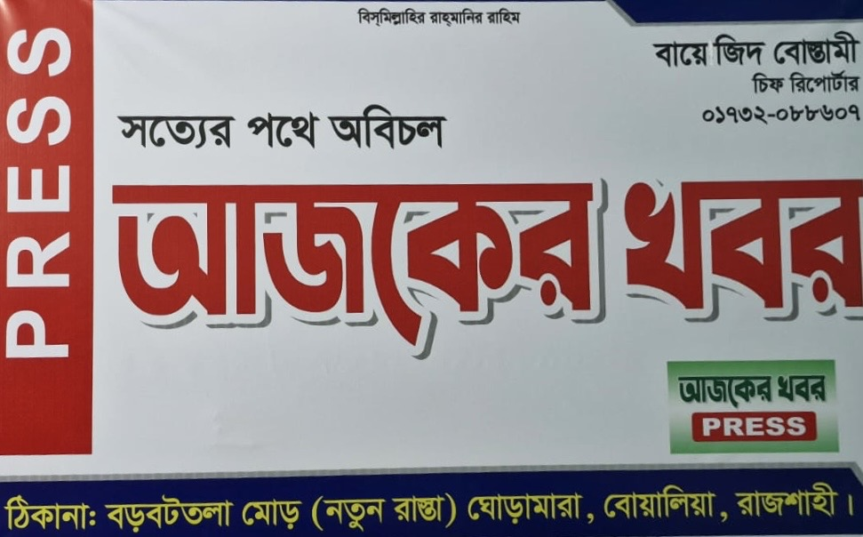

CHIEF REPORTER
চিফ রিপোর্টার বায়েজিদ বোস্তামী
আজকের খবর | রাজশাহী, বাংলাদেশ
সত্য, ন্যায় ও জনস্বার্থের পক্ষে অবিচল থেকে সাংবাদিকতার পথচলা। সত্যের সন্ধানে, মানুষের পাশে—এই বিশ্বাস নিয়েই প্রতিটি পদক্ষেপ।

আজকের খবর | রাজশাহী, বাংলাদেশ
সত্য, ন্যায় ও জনস্বার্থের পক্ষে অবিচল থেকে সাংবাদিকতার পথচলা। সত্যের সন্ধানে, মানুষের পাশে—এই বিশ্বাস নিয়েই প্রতিটি পদক্ষেপ।
আমি চিফ রিপোর্টার বায়ে জিদ বোস্তামী। সত্য, ন্যায় ও জনস্বার্থের পক্ষে অবিচল থেকে সাংবাদিকতার পথচলা শুরু করেছি। আমি বিশ্বাস করি, একটি শক্তিশালী, স্বাধীন ও দায়িত্বশীল গণমাধ্যমই পারে সমাজের বাস্তব চিত্র মানুষের সামনে তুলে ধরতে এবং গণতন্ত্রকে আরও সুদৃঢ় করতে।
আমার লক্ষ্য হলো বস্তুনিষ্ঠ সংবাদ, নির্ভুল তথ্য এবং সাধারণ মানুষের কণ্ঠস্বরকে সর্বোচ্চ গুরুত্ব দিয়ে কাজ করা। বাংলাদেশ আমার অহংকার, আর দেশের উন্নয়ন, মানবিক মূল্যবোধ ও জাতীয় স্বার্থ রক্ষায় দায়িত্বশীল সাংবাদিকতার মাধ্যমে অবদান রাখাই আমার অঙ্গীকার।
দ্রুত, নির্ভুল এবং সময়োপযোগী সংবাদ সংগ্রহের জন্য আমাদের নিজস্ব একটি কোম্পানি-নির্ধারিত ব্যক্তিগত যানবাহন রয়েছে। এই গাড়িটি সংবাদ সংগ্রহ, ঘটনাস্থল পরিদর্শন, মাঠপর্যায়ে অনুসন্ধান, সাক্ষাৎকার গ্রহণ এবং জরুরি সংবাদ কভারেজের জন্য সার্বক্ষণিক প্রস্তুত থাকে।
সংবাদ কখনো সময়ের অপেক্ষা করে না। তাই দিন-রাত, প্রতিকূল আবহাওয়া কিংবা দূরবর্তী এলাকার সংবাদ সংগ্রহে আমাদের এই যানবাহন গুরুত্বপূর্ণ ভূমিকা পালন করে। দেশের মানুষের কাছে দ্রুত ও সত্যনিষ্ঠ সংবাদ পৌঁছে দেওয়ার লক্ষ্যে এটি আমাদের কর্মযাত্রার অবিচ্ছেদ্য অংশ।
আমরা বিশ্বাস করি, একজন সাংবাদিকের দায়িত্ব কেবল সংবাদ প্রকাশ নয়; বরং মানুষের কণ্ঠস্বরকে জাতির সামনে তুলে ধরা এবং দেশের উন্নয়ন, ন্যায়বিচার ও জনস্বার্থের পক্ষে নিরলসভাবে কাজ করা। সেই অঙ্গীকার পূরণে আমাদের এই পরিবহন ব্যবস্থা প্রতিদিন আমাদের সঙ্গে পথচলার নীরব সহযাত্রী।
আমাদের কার্যালয় শুধু একটি সংবাদ অফিস নয়; এটি সত্য অনুসন্ধান, জনস্বার্থ রক্ষা এবং দেশের প্রতি দায়বদ্ধ সাংবাদিকতার একটি কর্মক্ষেত্র। এখান থেকেই প্রতিদিন স্থানীয় ও জাতীয় গুরুত্বপূর্ণ বিষয়গুলো পর্যবেক্ষণ, তথ্য সংগ্রহ, যাচাই এবং সংবাদ প্রকাশের কার্যক্রম পরিচালিত হয়।
আমরা বিশ্বাস করি, একটি শক্তিশালী বাংলাদেশ গড়ে তুলতে সঠিক তথ্য মানুষের কাছে পৌঁছে দেওয়া অত্যন্ত গুরুত্বপূর্ণ। তাই প্রতিটি সংবাদ প্রকাশের আগে নির্ভুলতা, বস্তুনিষ্ঠতা এবং নৈতিকতার বিষয়টি সর্বোচ্চ গুরুত্বের সঙ্গে বিবেচনা করা হয়।
আমাদের লক্ষ্য শুধুমাত্র সংবাদ পরিবেশন নয়; বরং সমাজের সমস্যা, সম্ভাবনা, উন্নয়নের অগ্রগতি এবং সাধারণ মানুষের আশা-আকাঙ্ক্ষাকে জাতির সামনে তুলে ধরা। দেশের আইন, সংবিধান এবং জাতীয় স্বার্থের প্রতি শ্রদ্ধাশীল থেকে আমরা দায়িত্বশীল সাংবাদিকতার মাধ্যমে জনগণের আস্থা অর্জনে প্রতিশ্রুতিবদ্ধ।
আমাদের কার্যালয় থেকে প্রতিদিন বিভিন্ন ধরনের সাংবাদিকতামূলক কার্যক্রম পরিচালিত হয়, যার মধ্যে রয়েছে—
একজন সাংবাদিকের সফলতার পেছনে একটি নিবেদিতপ্রাণ দলের অবদান অপরিসীম। আমার সঙ্গে একজন দক্ষ স্টাফ নিয়মিতভাবে সংবাদ সংগ্রহ, তথ্য যাচাই, নথিপত্র সংরক্ষণ, কার্যালয়ের প্রশাসনিক কাজ এবং সংবাদ প্রকাশের বিভিন্ন ধাপে সহযোগিতা করেন।
পারস্পরিক সহযোগিতা, সততা এবং পেশাদারিত্বের মাধ্যমে আমরা একটি দায়িত্বশীল সংবাদ পরিবেশ গড়ে তুলতে নিরলসভাবে কাজ করে যাচ্ছি।
"সত্যের পক্ষে নির্ভীক, জনগণের প্রতি দায়বদ্ধ, আর বাংলাদেশের উন্নয়ন ও সমৃদ্ধির পথে তথ্যভিত্তিক, নৈতিক ও বস্তুনিষ্ঠ সাংবাদিকতাই আমাদের অঙ্গীকার। প্রতিটি সংবাদে দেশপ্রেম, প্রতিটি প্রতিবেদনে জনস্বার্থ—এই আদর্শ নিয়েই আমাদের পথচলা।"
সত্য ও বস্তুনিষ্ঠ সংবাদ প্রকাশের অঙ্গীকার নিয়ে আমরা সবসময় জনগণের পাশে আছি। সংবাদ, তথ্য, মতামত, অভিযোগ, সামাজিক সমস্যা কিংবা জনস্বার্থ সংশ্লিষ্ট যেকোনো বিষয় আমাদের সঙ্গে নির্দ্বিধায় শেয়ার করতে পারেন। আপনার তথ্য ও সহযোগিতাই আমাদের সাংবাদিকতাকে আরও সমৃদ্ধ করে।
"আপনার তথ্য, আমাদের দায়িত্ব—সত্যের পথে একসাথে। একটি সচেতন, সমৃদ্ধ ও উন্নত বাংলাদেশের জন্য নির্ভীক ও দায়িত্বশীল সাংবাদিকতাই আমাদের অঙ্গীকার।"